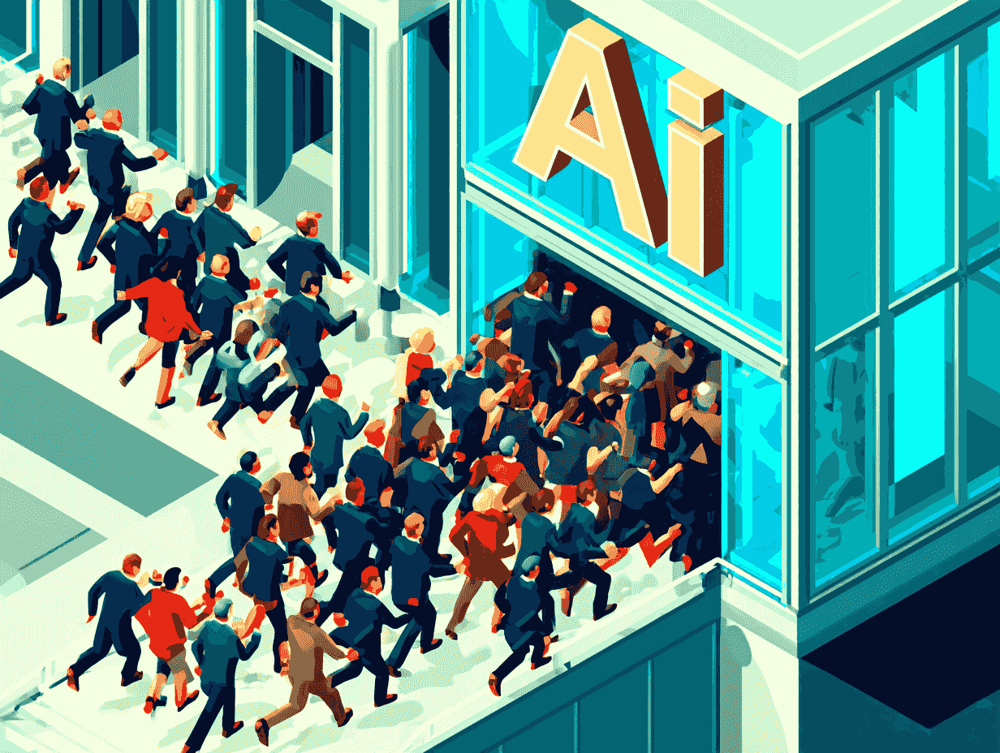

CREtech 2025: The AI Illusion and the Next Wave No One’s Talking About
AI was everywhere at CREtech 2025. From predictive amenities to “personalized tenant experiences,” the vendor booths and main stage talks were overflowing with AI promises. But as
November 18, 2025 · 2 min read
TL;DR: CREtech 2025 was full of AI demos but the real story is the next wave: owner-controlled data infrastructure as the durable competitive edge. AI products keep changing; owner data layers don't. The operators paying attention are building foundations, not chasing demos.
AI was everywhere at CREtech 2025.
From predictive amenities to “personalized tenant experiences,” the vendor booths and main stage talks were overflowing with AI promises. But as I sat among a room full of owners and operators, I couldn’t shake one thought:
Everyone’s talking about AI for tenants. No one is talking about AI for operations.
It’s as if CRE is being told to buy a self-driving car before checking if the roads are paved.
Spellbound by Buzzwords
The letters “AI” were repeated so often they started to lose meaning. I saw property executives in the audience trying to follow along—but drowning in buzzwords and tech jargon.
Here’s the hard truth: Most owners don’t need more AI hype. They need clarity.
They need to know:
- What systems are already generating data?
- Who owns that data?
- How do I even start making it usable?
The Gap Between Vision and Readiness
There’s a growing chasm in this industry:
- On one side: visionary tech providers showcasing what’s possible.
- On the other: real estate operators managing fragmented systems, disconnected infrastructure, and vendor-controlled networks.
Until we bridge that gap, all the AI talk is just talk.
What the Industry Missed
Here’s what no one mentioned on stage—but everyone in the trenches feels:
You can’t do AI until you own your digital infrastructure.
That means:
- Getting executive buy-in before rolling out tech.
- Managing change across teams and vendors.
- Designing for data privacy and security from day one.
This isn’t just IT’s job—it’s an ownership strategy.
The Next Wave Is Inward
The next real wave in CRE innovation won’t be about “AI-powered experiences.”
It’ll be about AI-ready systems, AI-ready teams, and AI-ready infrastructure.
And that starts with the PPP 5C™ Framework:
- Clarify what you actually own—and what’s costing you NOI.
- Connect your building systems and devices through a resilient, secure backbone.
- Collect structured, usable data—without vendor lock-in.
- Coordinate smarter operations and aligned vendors with data-driven precision.
- Control the outcome—because what you don’t own, you can’t optimize.
Don’t Just Talk AI—Audit for Readiness
If you’re serious about AI, start by auditing your digital foundation.
Our Peak Property Performance (PPP) Audit gives CRE owners a clear map of:
- What digital assets you control (and what you don’t)
- Where your infrastructure is leaking NOI
- What data exists—and how to make it useful
- How to future-proof your portfolio for AI, ESG, and tenant expectations
Own your digital infrastructure. Operate with strategic foresight. Build for the long game.

Your Next Step
Complimentary CRE Data & Digital Review Session
One building. Map who owns what, where data lives, and where operational burden stacks up vs your KPIs.